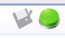

x10_platform.conf file by double-clicking on it in the
Package Explorer View.

This section describes how to create and validate a remote X10 project with the C++ back-end. See X10 Project with C++ Back-End for the basics on setting up an X10 project with the C++ back-end.
Project creation is the same as for a local X10 project. The difference is in the platform configuration information.
Edit the platform configuration file x10_platform.conf file by double-clicking on it in the
Package Explorer View.
The platform configuration editor is shown.
Note that there are two pages in the platform configuration form, accessed by the two tabs at the
bottom of the form.


Add a new connection by hitting the Add button. Type a name in the Name column - this is just a label which will refer to this system. Type the host name or IP address in the Host field. Enter User name and password, or specify the other login credentials required.

In the Communication Interface section (right side) of page 1, a default type has been selected for your platform. Change any values that you need.
Now you should validate the remote connection by hitting the Validate button. The status indicator should turn from grey to green, and the connection should be selected as the current connection (green checkmark at left).
If there is a problem, the status indicator turns red and an error is displayed.

Note that at the top of the page, you will see in red "2 errors detected." Hover over this error message with the mouse to see what the errors are. Note that any errors listed can be on either of the two pages.

In this case the errors are on the second page.
The error should be indicated on the form with a small red X icon.

On page 2, "C++ Compilation and Linking" you will set the Operating System and Architecture of the remote machine.

You will also need to set the output folder and X10 distribution location on the remote host. Note that these fields or the Browse buttons will not be enabled until the remote connection is validated on the first page.
Use the Browse button to select the Remote Output folder on the remote machine.
A browse dialog can be selected, and/or a path can be typed from the keyboard.
If the directory does not exist, it will be created.

Use the Browse button to select the X10 Distribution as well.
This is the location of the x10.dist directory on the remote system.
The directory you select should have subdirectories of include/ and lib/.
If you are installing on a machine where eclipse and x10dt are installed, an X10 distribution was installed for your platform.

If not, point to where the X10 distribution resides. Adjust the PGAS distribution location if it differs from the X10 distribution location.

Now validate the configuration by pushing the green button at the upper right of the form.

If it is successful, the files will be compiled and transferred to the remote system,
and the validate icon will change to a smiley icon.

If not successful, the problems will be shown.
Save the platform configuration with Ctrl-s or by hitting the floppy disk icon next to the validate/smiley icon in the top right are of the form.
See X10 Project with C++ Back-End for the basics on setting up an X10 project with the C++ back-end, with details for a local connection.
Continue to Running/Launching an X10 Application with the C++ back-end